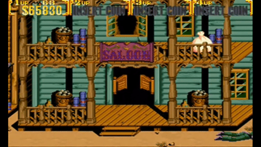

A caminho do próximo saloon
Ao sair do saloon você vaga pelos becos em busca de um pouco de ar para retomar os sentidos.
Tudo
parece muito tranquilo, mal há pessoas pela cidade.
Tudo está realmente parado, você acha estranho mas continua em seu caminho até que se depara com
grandes montes de feno empilhados bloqueando o caminho.
Para onde você deseja ir?
